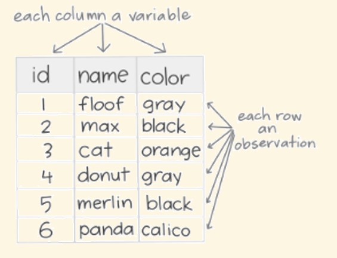
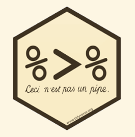
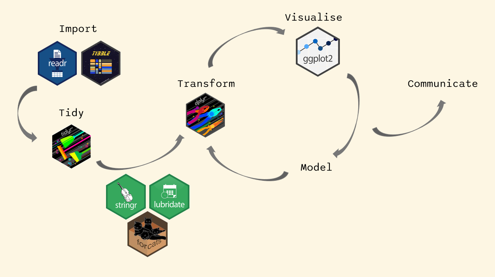
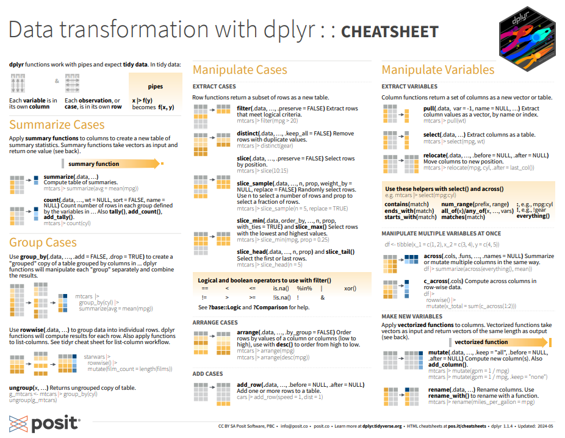
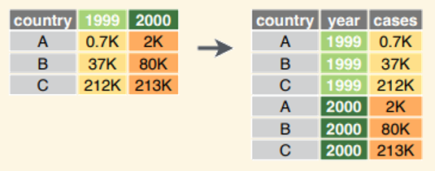
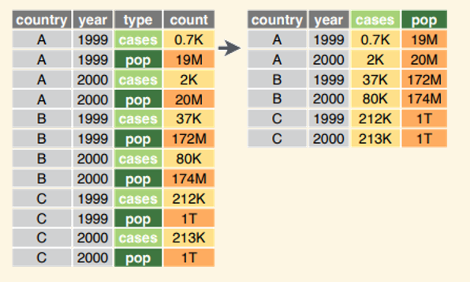

Introduction to the tidyverse
Cirad - UnB
2025-04-17
What is the tidyverse?
What is the tidyverse?
The name tidyverse come from tidy and universe.
A group of packages with a coherent syntax
Based on the idea of tidy data
Optimise the readability and functionality of the code (designed for humans)
Easy to sequence commands (using a pipe)

Installing the tidyverse
We just need to install and load the package tidyverse:
── Attaching core tidyverse packages ──────────────────────── tidyverse 2.0.0 ──
✔ dplyr 1.1.4 ✔ readr 2.1.5
✔ forcats 1.0.0 ✔ stringr 1.5.1
✔ ggplot2 3.5.1 ✔ tibble 3.2.1
✔ lubridate 1.9.3 ✔ tidyr 1.3.1
✔ purrr 1.0.2
── Conflicts ────────────────────────────────────────── tidyverse_conflicts() ──
✖ dplyr::filter() masks stats::filter()
✖ dplyr::lag() masks stats::lag()
ℹ Use the conflicted package (<http://conflicted.r-lib.org/>) to force all conflicts to become errorsCore packages of the tidyverse
This loads the “core” packages of the tidyverse:
tibble for tibbles, a modern re-imagining of data frames
readr for data import
tidyr for data tidying
stringr for strings
forcats for factors
lubridate for date/times
dplyr for data manipulation
ggplot2 for data visualisation
purrr for functional programming
Tidy data
The “concept” of tidy data has been proposed by Hadley Wickham (2014) to make data easy to manipulate and clean.
The principles are:
each variable is a column
each observation is a row
each type of observational unit is a table

All the packages of the tidyverse require tidy data.
Tibbles
All the packages of the tidyverse use objects of class tibble, which is an evolution of the classic data frame.
The main difference is that tibble don’t have row names.
Tibbles are compatible with data frames, and most of the tidyverse packages accept data frames.
Pipe
Commands can be executed one after the other using a pipe %>%:
[1] 22.46828is equivalent to
but much easier to read.
Pipe
The pipe is introduced by the package magritt, but is also loaded with the tidyverse.
It can be accessed using the shortcut Ctrl + Shuft + m

Workflow
Let’s work with data on trees of French Guiana
Functional trait data of trees
‘‘Functional traits are defined as morpho-physio-phenological traits which impact fitness indirectly via their effects on growth, reproduction and survival, the three components of individual performance.’’ Violle et al 2007
Commercial tree species
We will also use data on commercial species.
Import data with the package readr
Importing a csv file
We use the function read_csv to import the trait data from the csv file.
Rows: 45 Columns: 13
── Column specification ────────────────────────────────────────────────────────
Delimiter: ","
chr (2): genus, species
dbl (11): s_LMA, s_Nmass, s_Pmass, s_wsg, s_dbhmax, s_hmax, s_ah, s_seedmass...
ℹ Use `spec()` to retrieve the full column specification for this data.
ℹ Specify the column types or set `show_col_types = FALSE` to quiet this message.Importing a csv file
read_csv is the tidyverse equivalent of read.csv, but:
- it returns a tibble (which is also a data frame)
- it is faster
Functional trait data of trees
Let’s look at the functional trait data:
# A tibble: 45 × 13
genus species s_LMA s_Nmass s_Pmass s_wsg s_dbhmax s_hmax s_ah s_seedmass
<chr> <chr> <dbl> <dbl> <dbl> <dbl> <dbl> <dbl> <dbl> <dbl>
1 Abarema jupunba 110. 0.0232 5.7 e-4 0.576 0.66 50.9 0.308 1
2 Bocoa prouac… 95.6 0.0255 5.05e-4 0.798 0.4 47.9 0.251 1
3 Brosimum rubesc… 85.8 0.0188 6.88e-4 0.619 0.52 50.9 0.308 1
4 Carapa procera 130. 0.0177 6.36e-4 0.55 0.49 41.4 0.187 1
5 Caryocar glabrum 84.2 0.0217 8.13e-4 0.612 1.15 48.6 0.275 1
6 Cecropia obtusa 69.5 0.0276 1.38e-3 0.388 0.35 50.9 0.308 1
7 Chrysop… sangui… 151. 0.0154 4.69e-4 0.566 0.67 50.9 0.308 1
8 Conceve… guiane… 86.7 0.0235 7.29e-4 0.537 0.23 33.3 0.16 1
9 Cordia sagotii 134. 0.0253 5.92e-4 0.443 0.47 36.4 0.139 1
10 Couepia bracte… 123. 0.015 4.82e-4 0.784 0.45 50.9 0.308 1
# ℹ 35 more rows
# ℹ 3 more variables: s_regionalfreq <dbl>, s_tlp <dbl>, s_drymass <dbl>To know more, we can look at the help on the package rcontroll:
Transform data frame into tibble
Let’s import the data on commercial trees as a regular data frame:
[1] "data.frame"and transform it into a tibble using the function as_tibble:
Transform data frame into tibble
⚠️ Remember that tibbles don’t have row names.
So if there was row names that we wanted to keep in our data frame, we should use the function rownames_to_column to put them in a column (but let’s not store it here).
Warning: `as.tibble()` was deprecated in tibble 2.0.0.
ℹ Please use `as_tibble()` instead.
ℹ The signature and semantics have changed, see `?as_tibble`.# A tibble: 96 × 9
rowname CommercialName Genus Species CommercialLevel MinFD UpMinFD MaxFD
<chr> <chr> <chr> <chr> <int> <int> <int> <int>
1 1 st martin rouge Andira spp 2 55 60 120
2 2 bamba apici Aniba spp 2 55 60 120
3 3 bagasse Bagassa guiane… 2 55 60 120
4 4 assao Balizia pedice… 2 55 60 120
5 5 dokali Brosimum parina… 2 55 60 120
6 6 satiné rubané Brosimum rubesc… 2 55 60 120
7 7 dokali mapa Brosimum utile 2 55 60 120
8 8 bushi amanda Buchenav… spp 2 55 60 120
9 9 carapa Carapa guians… 2 55 60 120
10 10 carapa Carapa surina… 2 55 60 120
# ℹ 86 more rows
# ℹ 1 more variable: Aggregative <lgl>Commercial tree species
Let’s look at the sp_com data :
# A tibble: 96 × 8
CommercialName Genus Species CommercialLevel MinFD UpMinFD MaxFD Aggregative
<chr> <chr> <chr> <int> <int> <int> <int> <lgl>
1 st martin rouge Andi… spp 2 55 60 120 FALSE
2 bamba apici Aniba spp 2 55 60 120 FALSE
3 bagasse Baga… guiane… 2 55 60 120 FALSE
4 assao Bali… pedice… 2 55 60 120 FALSE
5 dokali Bros… parina… 2 55 60 120 FALSE
6 satiné rubané Bros… rubesc… 2 55 60 120 FALSE
7 dokali mapa Bros… utile 2 55 60 120 FALSE
8 bushi amanda Buch… spp 2 55 60 120 FALSE
9 carapa Cara… guians… 2 55 60 120 FALSE
10 carapa Cara… surina… 2 55 60 120 FALSE
# ℹ 86 more rowsTo know more, we can look at the help on the package LoggingLab (if you want to install it, see instructions here)
Manipulate and transform with the package dplyr
The verbs of dplyer
The package dplyr proposes an intuitive syntax to manipulate and transform data.
The names of the functions are verbs that relate to the use of the function.
dplyr functions accept data frame and tibble and return a tibble.
Operations on rows
slice
filter
arrange
distinct
slice
The function slice selects row(s) according to its/their position(s).
# A tibble: 1 × 13
genus species s_LMA s_Nmass s_Pmass s_wsg s_dbhmax s_hmax s_ah s_seedmass
<chr> <chr> <dbl> <dbl> <dbl> <dbl> <dbl> <dbl> <dbl> <dbl>
1 Lecythis poiteaui 86.0 0.0276 5.87e-4 0.695 0.61 49.2 0.27 1
# ℹ 3 more variables: s_regionalfreq <dbl>, s_tlp <dbl>, s_drymass <dbl>which is equivalent to:
# A tibble: 1 × 13
genus species s_LMA s_Nmass s_Pmass s_wsg s_dbhmax s_hmax s_ah s_seedmass
<chr> <chr> <dbl> <dbl> <dbl> <dbl> <dbl> <dbl> <dbl> <dbl>
1 Lecythis poiteaui 86.0 0.0276 5.87e-4 0.695 0.61 49.2 0.27 1
# ℹ 3 more variables: s_regionalfreq <dbl>, s_tlp <dbl>, s_drymass <dbl>slice
and also equivalent to:
# A tibble: 1 × 13
genus species s_LMA s_Nmass s_Pmass s_wsg s_dbhmax s_hmax s_ah s_seedmass
<chr> <chr> <dbl> <dbl> <dbl> <dbl> <dbl> <dbl> <dbl> <dbl>
1 Lecythis poiteaui 86.0 0.0276 5.87e-4 0.695 0.61 49.2 0.27 1
# ℹ 3 more variables: s_regionalfreq <dbl>, s_tlp <dbl>, s_drymass <dbl>slice
We can also get several rows:
# A tibble: 7 × 13
genus species s_LMA s_Nmass s_Pmass s_wsg s_dbhmax s_hmax s_ah s_seedmass
<chr> <chr> <dbl> <dbl> <dbl> <dbl> <dbl> <dbl> <dbl> <dbl>
1 Bocoa prouac… 95.6 0.0255 5.05e-4 0.798 0.4 47.9 0.251 1
2 Brosimum rubesc… 85.8 0.0188 6.88e-4 0.619 0.52 50.9 0.308 1
3 Carapa procera 130. 0.0177 6.36e-4 0.55 0.49 41.4 0.187 1
4 Caryocar glabrum 84.2 0.0217 8.13e-4 0.612 1.15 48.6 0.275 1
5 Cecropia obtusa 69.5 0.0276 1.38e-3 0.388 0.35 50.9 0.308 1
6 Chrysoph… sangui… 151. 0.0154 4.69e-4 0.566 0.67 50.9 0.308 1
7 Concevei… guiane… 86.7 0.0235 7.29e-4 0.537 0.23 33.3 0.16 1
# ℹ 3 more variables: s_regionalfreq <dbl>, s_tlp <dbl>, s_drymass <dbl>slice
We can select only the first (or last) ones using slice_head or slice_tail:
# A tibble: 3 × 13
genus species s_LMA s_Nmass s_Pmass s_wsg s_dbhmax s_hmax s_ah s_seedmass
<chr> <chr> <dbl> <dbl> <dbl> <dbl> <dbl> <dbl> <dbl> <dbl>
1 Abarema jupunba 110. 0.0232 5.7 e-4 0.576 0.66 50.9 0.308 1
2 Bocoa prouace… 95.6 0.0255 5.05e-4 0.798 0.4 47.9 0.251 1
3 Brosimum rubesce… 85.8 0.0188 6.88e-4 0.619 0.52 50.9 0.308 1
# ℹ 3 more variables: s_regionalfreq <dbl>, s_tlp <dbl>, s_drymass <dbl># A tibble: 4 × 13
genus species s_LMA s_Nmass s_Pmass s_wsg s_dbhmax s_hmax s_ah s_seedmass
<chr> <chr> <dbl> <dbl> <dbl> <dbl> <dbl> <dbl> <dbl> <dbl>
1 Theobroma subinc… 84.3 0.0188 5.89e-4 0.553 0.28 41.4 0.211 1
2 Unonopsis rufesc… 67.8 0.0211 6.11e-4 0.564 0.15 17.6 0.025 1
3 Virola michel… 95.2 0.024 6.31e-4 0.476 0.62 46.2 0.229 1
4 Vouacapo… americ… 72 0.026 1.60e-3 0.662 0.81 54.5 0.344 1
# ℹ 3 more variables: s_regionalfreq <dbl>, s_tlp <dbl>, s_drymass <dbl>slice
slice_min and slice_max selects the row with the smallest or biggest value for a given variable:
# A tibble: 1 × 13
genus species s_LMA s_Nmass s_Pmass s_wsg s_dbhmax s_hmax s_ah s_seedmass
<chr> <chr> <dbl> <dbl> <dbl> <dbl> <dbl> <dbl> <dbl> <dbl>
1 Quararib… duckei 50.8 0.0328 0.00103 0.527 0.14 19.4 0.07 1
# ℹ 3 more variables: s_regionalfreq <dbl>, s_tlp <dbl>, s_drymass <dbl># A tibble: 1 × 13
genus species s_LMA s_Nmass s_Pmass s_wsg s_dbhmax s_hmax s_ah s_seedmass
<chr> <chr> <dbl> <dbl> <dbl> <dbl> <dbl> <dbl> <dbl> <dbl>
1 Qualea rosea 106. 0.0184 0.00053 0.548 0.5 58.1 0.299 1
# ℹ 3 more variables: s_regionalfreq <dbl>, s_tlp <dbl>, s_drymass <dbl>filter
The function filter selects rows according to a condition (a test). Only the rows for which the result of the test is TRUE are selected.
Let’s select only the aggregative species in the commercial species dataset:
# A tibble: 2 × 8
CommercialName Genus Species CommercialLevel MinFD UpMinFD MaxFD Aggregative
<chr> <chr> <chr> <int> <int> <int> <int> <lgl>
1 angélique Dicory… guiane… 1 55 60 120 TRUE
2 gonfolo rose Qualea rosea 1 55 60 120 TRUE filter
Or let’s select the species that have a wood specific gravity (wsg) lower than 0.4:
# A tibble: 1 × 13
genus species s_LMA s_Nmass s_Pmass s_wsg s_dbhmax s_hmax s_ah s_seedmass
<chr> <chr> <dbl> <dbl> <dbl> <dbl> <dbl> <dbl> <dbl> <dbl>
1 Cecropia obtusa 69.5 0.0276 0.00138 0.388 0.35 50.9 0.308 1
# ℹ 3 more variables: s_regionalfreq <dbl>, s_tlp <dbl>, s_drymass <dbl>filter
We can also combine several conditions:
# A tibble: 0 × 13
# ℹ 13 variables: genus <chr>, species <chr>, s_LMA <dbl>, s_Nmass <dbl>,
# s_Pmass <dbl>, s_wsg <dbl>, s_dbhmax <dbl>, s_hmax <dbl>, s_ah <dbl>,
# s_seedmass <dbl>, s_regionalfreq <dbl>, s_tlp <dbl>, s_drymass <dbl>There are no species satisfying these two conditions in our dataset.
filter
We can also use a function to specify the condition.
Let’s select trees with maximum DBH higher than the median:
# A tibble: 22 × 13
genus species s_LMA s_Nmass s_Pmass s_wsg s_dbhmax s_hmax s_ah s_seedmass
<chr> <chr> <dbl> <dbl> <dbl> <dbl> <dbl> <dbl> <dbl> <dbl>
1 Abarema jupunba 110. 0.0232 5.7 e-4 0.576 0.66 50.9 0.308 1
2 Brosimum rubesc… 85.8 0.0188 6.88e-4 0.619 0.52 50.9 0.308 1
3 Carapa procera 130. 0.0177 6.36e-4 0.55 0.49 41.4 0.187 1
4 Caryocar glabrum 84.2 0.0217 8.13e-4 0.612 1.15 48.6 0.275 1
5 Chrysop… sangui… 151. 0.0154 4.69e-4 0.566 0.67 50.9 0.308 1
6 Cordia sagotii 134. 0.0253 5.92e-4 0.443 0.47 36.4 0.139 1
7 Couepia bracte… 123. 0.015 4.82e-4 0.784 0.45 50.9 0.308 1
8 Cyrillo… paraen… 53.0 0.0289 5.72e-4 0.757 0.55 50.9 0.308 1
9 Dicoryn… guiane… 91.3 0.0243 6.9 e-4 0.61 1.02 57.9 0.362 1
10 Drypetes variab… 113. 0.0204 7.76e-4 0.699 0.5 50.9 0.308 1
# ℹ 12 more rows
# ℹ 3 more variables: s_regionalfreq <dbl>, s_tlp <dbl>, s_drymass <dbl>arrange
The function arrange reorders the row according to one or several columns:
Let’s sort the species by increasing order of WSG, and then by decreasing order of hmax:
# A tibble: 45 × 13
genus species s_LMA s_Nmass s_Pmass s_wsg s_dbhmax s_hmax s_ah s_seedmass
<chr> <chr> <dbl> <dbl> <dbl> <dbl> <dbl> <dbl> <dbl> <dbl>
1 Cecropia obtusa 69.5 0.0276 1.38e-3 0.388 0.35 50.9 0.308 1
2 Cordia sagotii 134. 0.0253 5.92e-4 0.443 0.47 36.4 0.139 1
3 Neea florib… 74.3 0.036 7.65e-4 0.451 0.28 50.9 0.308 1
4 Virola michel… 95.2 0.024 6.31e-4 0.476 0.62 46.2 0.229 1
5 Iryanth… sagoti… 91.0 0.0193 5.29e-4 0.522 0.37 44.3 0.264 1
6 Quarari… duckei 50.8 0.0328 1.03e-3 0.527 0.14 19.4 0.07 1
7 Conceve… guiane… 86.7 0.0235 7.29e-4 0.537 0.23 33.3 0.16 1
8 Qualea rosea 106. 0.0184 5.3 e-4 0.548 0.5 58.1 0.299 1
9 Carapa procera 130. 0.0177 6.36e-4 0.55 0.49 41.4 0.187 1
10 Theobro… subinc… 84.3 0.0188 5.89e-4 0.553 0.28 41.4 0.211 1
# ℹ 35 more rows
# ℹ 3 more variables: s_regionalfreq <dbl>, s_tlp <dbl>, s_drymass <dbl>distinct
The function distinct keep only rows that are distinct.
Let’s create a simple dataset with a duplicated row:
# A tibble: 3 × 2
name age
<chr> <dbl>
1 Lucia 21
2 Lucia 21
3 Anna 23and use distinct to keep only distinct rows:
https://larmarange.github.io/guide-R/manipulation/dplyr.html#distinct
Operations on columns
select
rename
mutate
relocate
select
The function select selects columns:
Let’s select the Commercial names, Genus and Species from sp_com:
# A tibble: 96 × 3
CommercialName Genus Species
<chr> <chr> <chr>
1 st martin rouge Andira spp
2 bamba apici Aniba spp
3 bagasse Bagassa guianensis
4 assao Balizia pedicellaris
5 dokali Brosimum parinarioides
6 satiné rubané Brosimum rubescens
7 dokali mapa Brosimum utile
8 bushi amanda Buchenavia spp
9 carapa Carapa guiansensis
10 carapa Carapa surinamensis
# ℹ 86 more rowsselect
We can also say the columns we don’t want to select using select.
Let’s select all the columns but the commercial name, using - before the name of the column to exclude:
# A tibble: 96 × 7
Genus Species CommercialLevel MinFD UpMinFD MaxFD Aggregative
<chr> <chr> <int> <int> <int> <int> <lgl>
1 Andira spp 2 55 60 120 FALSE
2 Aniba spp 2 55 60 120 FALSE
3 Bagassa guianensis 2 55 60 120 FALSE
4 Balizia pedicellaris 2 55 60 120 FALSE
5 Brosimum parinarioides 2 55 60 120 FALSE
6 Brosimum rubescens 2 55 60 120 FALSE
7 Brosimum utile 2 55 60 120 FALSE
8 Buchenavia spp 2 55 60 120 FALSE
9 Carapa guiansensis 2 55 60 120 FALSE
10 Carapa surinamensis 2 55 60 120 FALSE
# ℹ 86 more rowsselect
We can use functions to express a conditions on the column names: starts_with, ends_with, contains…
# A tibble: 96 × 2
CommercialName CommercialLevel
<chr> <int>
1 st martin rouge 2
2 bamba apici 2
3 bagasse 2
4 assao 2
5 dokali 2
6 satiné rubané 2
7 dokali mapa 2
8 bushi amanda 2
9 carapa 2
10 carapa 2
# ℹ 86 more rowsSee the package tidyselect for more…
rename
We can rename columns with the function rename:
# A tibble: 45 × 13
genus species LMA s_Nmass s_Pmass s_wsg s_dbhmax s_hmax s_ah s_seedmass
<chr> <chr> <dbl> <dbl> <dbl> <dbl> <dbl> <dbl> <dbl> <dbl>
1 Abarema jupunba 110. 0.0232 5.7 e-4 0.576 0.66 50.9 0.308 1
2 Bocoa prouac… 95.6 0.0255 5.05e-4 0.798 0.4 47.9 0.251 1
3 Brosimum rubesc… 85.8 0.0188 6.88e-4 0.619 0.52 50.9 0.308 1
4 Carapa procera 130. 0.0177 6.36e-4 0.55 0.49 41.4 0.187 1
5 Caryocar glabrum 84.2 0.0217 8.13e-4 0.612 1.15 48.6 0.275 1
6 Cecropia obtusa 69.5 0.0276 1.38e-3 0.388 0.35 50.9 0.308 1
7 Chrysop… sangui… 151. 0.0154 4.69e-4 0.566 0.67 50.9 0.308 1
8 Conceve… guiane… 86.7 0.0235 7.29e-4 0.537 0.23 33.3 0.16 1
9 Cordia sagotii 134. 0.0253 5.92e-4 0.443 0.47 36.4 0.139 1
10 Couepia bracte… 123. 0.015 4.82e-4 0.784 0.45 50.9 0.308 1
# ℹ 35 more rows
# ℹ 3 more variables: s_regionalfreq <dbl>, s_tlp <dbl>, s_drymass <dbl>mutate
The function mutate creates new columns, using existing ones.
Let’s create a new column in the traits dataset to have the DBHmax in cm:
# A tibble: 5 × 4
genus species s_dbhmax dbhmax_cm
<chr> <chr> <dbl> <dbl>
1 Abarema jupunba 0.66 66
2 Bocoa prouacensis 0.4 40
3 Brosimum rubescens 0.52 52
4 Carapa procera 0.49 49
5 Caryocar glabrum 1.15 115relocate
We can reorder the columns using the function relocate. We just need to specify the columns we want to put first (the order of the other ones is unchanged).
Let’s move the columns of DBHmax and Hmax first (after the species name) in the trait dataset:
# A tibble: 5 × 13
genus species s_dbhmax s_hmax s_LMA s_Nmass s_Pmass s_wsg s_ah s_seedmass
<chr> <chr> <dbl> <dbl> <dbl> <dbl> <dbl> <dbl> <dbl> <dbl>
1 Abarema jupunba 0.66 50.9 110. 0.0232 5.7 e-4 0.576 0.308 1
2 Bocoa prouace… 0.4 47.9 95.6 0.0255 5.05e-4 0.798 0.251 1
3 Brosimum rubesce… 0.52 50.9 85.8 0.0188 6.88e-4 0.619 0.308 1
4 Carapa procera 0.49 41.4 130. 0.0177 6.36e-4 0.55 0.187 1
5 Caryocar glabrum 1.15 48.6 84.2 0.0217 8.13e-4 0.612 0.275 1
# ℹ 3 more variables: s_regionalfreq <dbl>, s_tlp <dbl>, s_drymass <dbl>Grouped operations
group_by
summarise
count
group_by
The function group_by allow grouping rows according to the values of a column.
Let’s group the table of traits by genus
# A tibble: 45 × 13
# Groups: genus [35]
genus species s_LMA s_Nmass s_Pmass s_wsg s_dbhmax s_hmax s_ah s_seedmass
<chr> <chr> <dbl> <dbl> <dbl> <dbl> <dbl> <dbl> <dbl> <dbl>
1 Abarema jupunba 110. 0.0232 5.7 e-4 0.576 0.66 50.9 0.308 1
2 Bocoa prouac… 95.6 0.0255 5.05e-4 0.798 0.4 47.9 0.251 1
3 Brosimum rubesc… 85.8 0.0188 6.88e-4 0.619 0.52 50.9 0.308 1
4 Carapa procera 130. 0.0177 6.36e-4 0.55 0.49 41.4 0.187 1
5 Caryocar glabrum 84.2 0.0217 8.13e-4 0.612 1.15 48.6 0.275 1
6 Cecropia obtusa 69.5 0.0276 1.38e-3 0.388 0.35 50.9 0.308 1
7 Chrysop… sangui… 151. 0.0154 4.69e-4 0.566 0.67 50.9 0.308 1
8 Conceve… guiane… 86.7 0.0235 7.29e-4 0.537 0.23 33.3 0.16 1
9 Cordia sagotii 134. 0.0253 5.92e-4 0.443 0.47 36.4 0.139 1
10 Couepia bracte… 123. 0.015 4.82e-4 0.784 0.45 50.9 0.308 1
# ℹ 35 more rows
# ℹ 3 more variables: s_regionalfreq <dbl>, s_tlp <dbl>, s_drymass <dbl>There is no apparent change in the tibble, except the mention of the grouping.
group_by with slice
When groups have been defined, we can apply further operations on these groups by using other functions.
Let’s select the species with the maximum wsg for each genus, using slice_max:
# A tibble: 35 × 13
# Groups: genus [35]
genus species s_LMA s_Nmass s_Pmass s_wsg s_dbhmax s_hmax s_ah s_seedmass
<chr> <chr> <dbl> <dbl> <dbl> <dbl> <dbl> <dbl> <dbl> <dbl>
1 Abarema jupunba 110. 0.0232 5.7 e-4 0.576 0.66 50.9 0.308 1
2 Bocoa prouac… 95.6 0.0255 5.05e-4 0.798 0.4 47.9 0.251 1
3 Brosimum rubesc… 85.8 0.0188 6.88e-4 0.619 0.52 50.9 0.308 1
4 Carapa procera 130. 0.0177 6.36e-4 0.55 0.49 41.4 0.187 1
5 Caryocar glabrum 84.2 0.0217 8.13e-4 0.612 1.15 48.6 0.275 1
6 Cecropia obtusa 69.5 0.0276 1.38e-3 0.388 0.35 50.9 0.308 1
7 Chrysop… sangui… 151. 0.0154 4.69e-4 0.566 0.67 50.9 0.308 1
8 Conceve… guiane… 86.7 0.0235 7.29e-4 0.537 0.23 33.3 0.16 1
9 Cordia sagotii 134. 0.0253 5.92e-4 0.443 0.47 36.4 0.139 1
10 Couepia bracte… 123. 0.015 4.82e-4 0.784 0.45 50.9 0.308 1
# ℹ 25 more rows
# ℹ 3 more variables: s_regionalfreq <dbl>, s_tlp <dbl>, s_drymass <dbl>We see that the resulting tibble has as many rows as there are genus.
group_by with mutate
We can also use v with mutate to do an operation by group.
Let’s calculate the mean wsg of each genus:
# A tibble: 45 × 4
# Groups: genus [35]
genus species s_wsg mean_wsg
<chr> <chr> <dbl> <dbl>
1 Abarema jupunba 0.576 0.576
2 Bocoa prouacensis 0.798 0.798
3 Brosimum rubescens 0.619 0.619
4 Carapa procera 0.55 0.55
5 Caryocar glabrum 0.612 0.612
6 Cecropia obtusa 0.388 0.388
7 Chrysophyllum sanguinolentum 0.566 0.566
8 Conceveiba guianensis 0.537 0.537
9 Cordia sagotii 0.443 0.443
10 Couepia bracteosa 0.784 0.768
# ℹ 35 more rowsHere all rows are kept and species of a same genus have the same value for mean_wsg
group_by with mutate
We can check this by looking at the Licania for instance:
# A tibble: 3 × 4
# Groups: genus [1]
genus species s_wsg mean_wsg
<chr> <chr> <dbl> <dbl>
1 Licania alba 0.755 0.769
2 Licania canescens 0.766 0.769
3 Licania membranacea 0.785 0.769group_by with filter
We can also use group_by with filter to select according to a conditions applied on each group.
Let’s look at the species that have a higher wsg than the mean of their genus:
# A tibble: 7 × 3
# Groups: genus [6]
genus species s_wsg
<chr> <chr> <dbl>
1 Couepia bracteosa 0.784
2 Eschweilera coriacea 0.657
3 Lecythis poiteaui 0.695
4 Licania membranacea 0.785
5 Pouteria cladantha 0.811
6 Protium gallicum 0.639
7 Protium trifoliolatum 0.659Here there are 7 species that have a wsg higher than the mean of their genus.
summarise
The function summarise aggregates the row by performing a summary operation on one or several columns.
Let’s look at the min, max and mean values of wsg accross the dataset:
# A tibble: 1 × 3
min_wsg max_wsg mean_wsg
<dbl> <dbl> <dbl>
1 0.388 0.811 0.635Note that here only the summary columns are kept.
summarise
The function summarise can be used together with group_by to summarise by group.
Let’s look at the min, max and mean values of wsg by genus:
# A tibble: 35 × 4
genus min_wsg max_wsg mean_wsg
<chr> <dbl> <dbl> <dbl>
1 Abarema 0.576 0.576 0.576
2 Bocoa 0.798 0.798 0.798
3 Brosimum 0.619 0.619 0.619
4 Carapa 0.55 0.55 0.55
5 Caryocar 0.612 0.612 0.612
6 Cecropia 0.388 0.388 0.388
7 Chrysophyllum 0.566 0.566 0.566
8 Conceveiba 0.537 0.537 0.537
9 Cordia 0.443 0.443 0.443
10 Couepia 0.752 0.784 0.768
# ℹ 25 more rowsHere there are as many row than there are groups.
count
The function count counts the number of rows per group.
Let’s count the number of species per genus:
Grouping according to several columns
The functions group_by and count can be used to group on several columns.
Let’s go back to the dataset on commercial species and count the number of Species per Genus and per commercial name:
# A tibble: 66 × 3
Genus CommercialName n
<chr> <chr> <int>
1 Andira st martin rouge 1
2 Aniba bamba apici 1
3 Bagassa bagasse 1
4 Balizia assao 1
5 Brosimum dokali 1
6 Brosimum dokali mapa 1
7 Brosimum satiné rubané 1
8 Buchenavia bushi amanda 1
9 Carapa carapa 2
10 Caryocar chawari 2
# ℹ 56 more rowsWe see that the genus Brosimum has three species, all with a different commercial name.
We see for instance that the genus Caryocar has two species for which the commercial name is chawari.
Using a pipe to chain the different operations
We can a pipe %>% to chain several operations.
The result of each operation feeds into the next one.
⚠️ Don’t forget to put the result of a pipe in a new (or existing) object.
When writing a pipe, write the operations one by one and test them one by one.
The first thing to check is if the dimensions of the tibble have changed, and if you were expecting it to change.
Using a pipe to chain the different operations
gen_dim_max <- traits %>%
select(genus, species, s_hmax, s_dbhmax) %>%
rename(Hmax = s_hmax,
DBHmax = s_dbhmax) %>%
mutate(BAmax = (DBHmax/2)^2 * pi) %>%
group_by(genus) %>%
summarise(Hmax_mean = mean(Hmax),
DBHmax_mean = mean(DBHmax),
BAmax_mean = mean(BAmax)) %>%
arrange(desc(BAmax_mean))
gen_dim_max # A tibble: 35 × 4
genus Hmax_mean DBHmax_mean BAmax_mean
<chr> <dbl> <dbl> <dbl>
1 Caryocar 48.6 1.15 1.04
2 Dicorynia 57.9 1.02 0.817
3 Manilkara 50.9 0.88 0.608
4 Minquartia 50.9 0.87 0.594
5 Vouacapoua 54.5 0.81 0.515
6 Eschweilera 48.0 0.675 0.372
7 Chrysophyllum 50.9 0.67 0.353
8 Eperua 44.8 0.67 0.353
9 Micropholis 50.9 0.67 0.353
10 Abarema 50.9 0.66 0.342
# ℹ 25 more rowsWhat did we do?
select 4 columns
rename 2 columns
add the basal area max
group by genus
calculate mean dimensions by genus
sort the table by decreasing order of BAmax_mean
store the result in gen_dim_max
Combining multiple tables
Concatenation
Joint
Concatenation
The functions bind_rows and bind_cols allow to add rows and columns, respectively, from one or several tables.
bind_rows
To understand how bind_rows, we will first create several datasets of traits from the one we have used so far. This is obviously only for the purpose of the exercise…
bind_rows
We can use bind_row to concatenate the three table by rows.
# A tibble: 7 × 13
genus species s_LMA s_Nmass s_Pmass s_wsg s_dbhmax s_hmax s_ah s_seedmass
<chr> <chr> <dbl> <dbl> <dbl> <dbl> <dbl> <dbl> <dbl> <dbl>
1 Abarema jupunba 110. 0.0232 5.7 e-4 0.576 0.66 50.9 0.308 1
2 Bocoa prouac… 95.6 0.0255 5.05e-4 0.798 0.4 47.9 0.251 1
3 Lecythis poitea… 86.0 0.0276 5.87e-4 NA 0.61 NA 0.27 1
4 Licania alba 138. 0.0141 3.93e-4 NA 0.42 NA 0.207 1
5 Lecythis poitea… NA 0.0276 5.87e-4 0.695 0.61 49.2 0.27 1
6 Licania alba NA 0.0141 3.93e-4 0.755 0.42 40.3 0.207 1
7 Licania canesc… NA 0.0206 4.37e-4 0.766 0.29 27.3 0.11 1
# ℹ 3 more variables: s_regionalfreq <dbl>, s_tlp <dbl>, s_drymass <dbl>When the columns were missing in some tables, the values have been filled with NA.
bind_rows
If we want to keep track of which table the rows came from, we can use the argument .id and specify the name of the column in which we want to store this information (here “source”).
We can also explicity give a name to each table.
# A tibble: 7 × 14
source genus species s_LMA s_Nmass s_Pmass s_wsg s_dbhmax s_hmax s_ah
<chr> <chr> <chr> <dbl> <dbl> <dbl> <dbl> <dbl> <dbl> <dbl>
1 table1 Abarema jupunba 110. 0.0232 5.7 e-4 0.576 0.66 50.9 0.308
2 table1 Bocoa prouacensis 95.6 0.0255 5.05e-4 0.798 0.4 47.9 0.251
3 table2 Lecythis poiteaui 86.0 0.0276 5.87e-4 NA 0.61 NA 0.27
4 table2 Licania alba 138. 0.0141 3.93e-4 NA 0.42 NA 0.207
5 table Lecythis poiteaui NA 0.0276 5.87e-4 0.695 0.61 49.2 0.27
6 table Licania alba NA 0.0141 3.93e-4 0.755 0.42 40.3 0.207
7 table Licania canescens NA 0.0206 4.37e-4 0.766 0.29 27.3 0.11
# ℹ 4 more variables: s_seedmass <dbl>, s_regionalfreq <dbl>, s_tlp <dbl>,
# s_drymass <dbl>bind_cols
bind_cols works in a similar way but to concatenate columns.
# A tibble: 2 × 4
genus species s_LMA s_wsg
<chr> <chr> <dbl> <dbl>
1 Abarema jupunba 110. 0.576
2 Bocoa prouacensis 95.6 0.798⚠️ The columns are matched only by position, so the rows needs to correspond (and there must be the same number of rows). A safer option is to use joints to combine several tables by columns.
The joints
Several functions allows to join two tibbles (here x and y) using a key (or several).
A key is a column (or group of columns) that is used to match rows when joining two datasets. ⚠️ A key need to uniquely identify observations in one or both datasets (otherwise there will be several combinations of matches).
left_join keeps all rows in x
right_join keeps all rows in y
inner_join keeps only rows from x that have a matching key in y
full_join keeps all the rows in x and y
The joints
We are now going to join the dataset of traits and the dataset of commercial species.
Let’s first select a subset of columns in each, to visualise the results better.
Both datasets have a column for the genus and a column for the species, which we can use as keys. But the columns names are not exactly written in the same way.
left_join
We can join traits_sub with sp_com_sub using a left_join.
We need to specify which column matches which (as they are no columns with the exact same names in both datasets).
# A tibble: 45 × 5
genus species s_LMA s_wsg CommercialName
<chr> <chr> <dbl> <dbl> <chr>
1 Abarema jupunba 110. 0.576 <NA>
2 Bocoa prouacensis 95.6 0.798 <NA>
3 Brosimum rubescens 85.8 0.619 satiné rubané
4 Carapa procera 130. 0.55 <NA>
5 Caryocar glabrum 84.2 0.612 chawari
6 Cecropia obtusa 69.5 0.388 <NA>
7 Chrysophyllum sanguinolentum 151. 0.566 balata pomme
8 Conceveiba guianensis 86.7 0.537 <NA>
9 Cordia sagotii 134. 0.443 <NA>
10 Couepia bracteosa 123. 0.784 <NA>
# ℹ 35 more rowsleft_join
We can see that left_join kept all rows of traits_sub,
and that NA have been added when there was not match in sp_com_sub.
# A tibble: 5 × 5
genus species s_LMA s_wsg CommercialName
<chr> <chr> <dbl> <dbl> <chr>
1 Abarema jupunba 110. 0.576 <NA>
2 Bocoa prouacensis 95.6 0.798 <NA>
3 Brosimum rubescens 85.8 0.619 satiné rubané
4 Carapa procera 130. 0.55 <NA>
5 Caryocar glabrum 84.2 0.612 chawari righ_joint
We can join traits_sub with sp_com_sub using a right_join.
We can see that right_join kept all rows of sp_com_sub.
Here as well, NA have been added when there was not match in traits_sub.
inner_join
Let’s now use a inner_join.
full_join
Let’s now use a full_join.
[1] 130The full_join keeps all the rows in x and y
So there are 130 species in total in traits_sub and sp_com_sub.
🤔 What did we do here? We checked that the total number of species is equal to the sum of the number of species in each datasets minus the number of common species.
We have seen some of the main functions of dplyr…
Tidy a dataset with with the package tidyr
The verbs of tidyr
With dplyr, we have seen how to manipulate and transform tidy data. But what to do when data are non-tidy?
We are going to use the package tidyr to make messy (untidy) data tidy, so that we can use them with all the packages of the tidyverse.
Just as dplyr, the syntax of tidyr is based on intuitive verbs, and commands can be chained using a pipe (%>%)

Let’s load some untidy data
Today we are going to work with several dummy datasets, created only to serve as examples.
They are available as a .Rdata file here
A .Rdata file is a file that can contain several R objects.
Let’s load them in our environment:
First example of untidy data
Let’s look at the dataset called dt1 containing tree DBH for different years:
# A tibble: 3 × 4
tree `2015` `2020` `2025`
<chr> <dbl> <dbl> <dbl>
1 tree1 25 26 26.5
2 tree2 35 37 38.5
3 tree3 43 43 43 🤔 Why is it untidy? What are the variables in this table?
The variables are the tree, the year and the DBH. These variable are NOT stored in columns.
pivot_longer
We can use the function pivot_longer to put it in a tidy format:
# A tibble: 9 × 3
tree name value
<chr> <chr> <dbl>
1 tree1 2015 25
2 tree1 2020 26
3 tree1 2025 26.5
4 tree2 2015 35
5 tree2 2020 37
6 tree2 2025 38.5
7 tree3 2015 43
8 tree3 2020 43
9 tree3 2025 43 We now have a column per variable, and a row per observation 😀
pivot_longer
We can specify the names of the columns that will be created:
pivot_longer
pivot_longer transform a table in a wide format to a table in a long format.
Source: tidyr cheatsheet
pivot_wider
The function pivot_wider does the opposite of pivot_longer:
# A tibble: 3 × 4
tree `2015` `2020` `2025`
<chr> <dbl> <dbl> <dbl>
1 tree1 25 26 26.5
2 tree2 35 37 38.5
3 tree3 43 43 43 So we get back the wide table that we had initially.
pivot_wider
pivot_wider transform a table in a long format to a table in a wide format.
Source: tidyr cheatsheet
Second example of untidy data
Let’s look at the dataset called dt2 containing several tree DBH for different species:
# A tibble: 3 × 2
taxo DBH
<chr> <chr>
1 Anacardiaceae_Myracrodruon_urundeuva 10, 12, 21
2 Fabaceae_Hymenaea_martiana 13
3 Favaceae_Piptadenia_macradenia 24, 18 🤔 Why is it untidy?
The column taxo contains the family, genus and species names. And there are several values of DBH in a single column.
separate
We can use the function separate to separate the content of a column into several columns:
# A tibble: 3 × 4
family genus species DBH
<chr> <chr> <chr> <chr>
1 Anacardiaceae Myracrodruon urundeuva 10, 12, 21
2 Fabaceae Hymenaea martiana 13
3 Favaceae Piptadenia macradenia 24, 18 unite
The function unite does the opposite of separate.
Let’s create a column to store the full species name:
# A tibble: 3 × 5
family full_name genus species DBH
<chr> <chr> <chr> <chr> <chr>
1 Anacardiaceae Myracrodruon urundeuva Myracrodruon urundeuva 10, 12, 21
2 Fabaceae Hymenaea martiana Hymenaea martiana 13
3 Favaceae Piptadenia macradenia Piptadenia macradenia 24, 18 separate_rows
We still have the problem of having several DBH in a single column. 🤔 How should we store them?
We should store each DBH (observation) in a separate row. We can use the function separate_rows to do this:
# A tibble: 6 × 5
family full_name genus species DBH
<chr> <chr> <chr> <chr> <dbl>
1 Anacardiaceae Myracrodruon urundeuva Myracrodruon urundeuva 10
2 Anacardiaceae Myracrodruon urundeuva Myracrodruon urundeuva 12
3 Anacardiaceae Myracrodruon urundeuva Myracrodruon urundeuva 21
4 Fabaceae Hymenaea martiana Hymenaea martiana 13
5 Favaceae Piptadenia macradenia Piptadenia macradenia 24
6 Favaceae Piptadenia macradenia Piptadenia macradenia 18complete
Let’s go back to the first data set db1L and let’s add a measurement for tree3 in 2017:
# A tibble: 10 × 3
tree year DBH
<chr> <chr> <dbl>
1 tree1 2015 25
2 tree1 2020 26
3 tree1 2025 26.5
4 tree2 2015 35
5 tree2 2020 37
6 tree2 2025 38.5
7 tree3 2015 43
8 tree3 2020 43
9 tree3 2025 43
10 tree3 2017 43 complete
To add rows for the two other trees for 2017, we can use the function complete.
The function complete add rows for all missing combination of several columns.
# A tibble: 12 × 3
tree year DBH
<chr> <chr> <dbl>
1 tree1 2015 25
2 tree1 2017 NA
3 tree1 2020 26
4 tree1 2025 26.5
5 tree2 2015 35
6 tree2 2017 NA
7 tree2 2020 37
8 tree2 2025 38.5
9 tree3 2015 43
10 tree3 2017 43
11 tree3 2020 43
12 tree3 2025 43 The package janitor
To go further, the package janitor has several useful functions to clean messy data.
For example, this one:
clean_names
The function clean_names cleans the variable names:
use a consistent format
remove space and special characters
convert # to number and % to percent
…
# A tibble: 3 × 3
number_sitio percent_cobertura num_parcela
<chr> <dbl> <dbl>
1 A 0.25 1
2 <NA> NA NA
3 <NA> NA NAremove_empty
The function remove_empty removes empty rows and/or columns:
value for "which" not specified, defaulting to c("rows", "cols")# A tibble: 1 × 3
number_sitio percent_cobertura num_parcela
<chr> <dbl> <dbl>
1 A 0.25 1package forcats for qualitative variables
https://juba.github.io/tidyverse/09-recodages.html#combiner-plusieurs-variables
package stringr
https://biodiversitydata.github.io/chapters/data-cleaning.html
https://larmarange.github.io/guide-R/manipulation_avancee/stringr.html
https://juba.github.io/tidyverse/11-stringr.html
package lubidate
https://biodiversitydata.github.io/chapters/data-cleaning.html
TO DECIDE
https://juba.github.io/tidyverse/09-recodages.html#combiner-plusieurs-variables
dire ggplot on va voir après
Acknowledgments
Eric
https://biodiversitydata.github.io/chapters/data-cleaning.html
juba
Ressources
cheatsheet of each of the tidyverse package
- Wickham, H. . (2014). Tidy Data. Journal of Statistical Software, 59(10), 1–23. https://doi.org/10.18637/jss.v059.i10
R for data science: chap sur les données